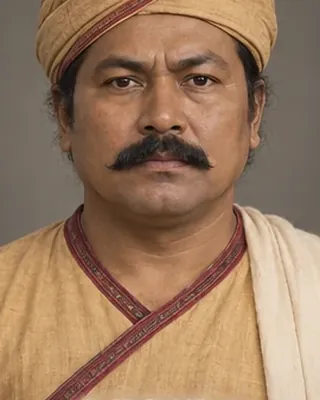

d. 1799 · Rebel king

Moamoria chief placed on the throne after the 1785–86 rebel victory; coins were struck in his name. Killed in 1799 (another page gives 1800).
Record confidence: medium.
Open interactive profile
c. 1791